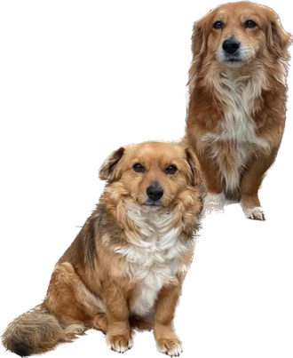
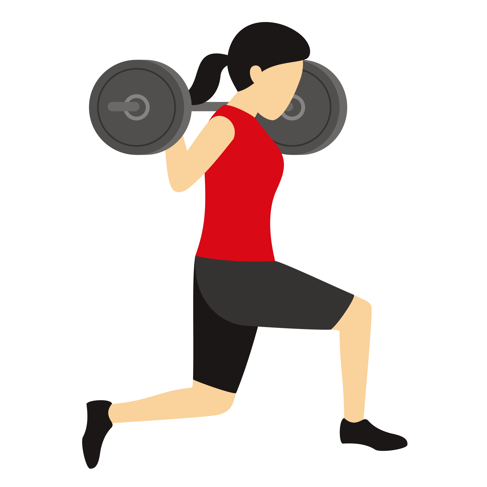

Мојата најомилена активност во слободно време е шетање на моите кучиња.
Вежбање е активност која ја правам секој ден. Без разлика на тоа колку обврски имам, успевам да најдам 1 час во денот и да одам во теретана.
Секогаш се трудам да читам што е можно повеќе книги, поставувајќи си цели, како на пример: 12 до 15 книги годишно. Читањето книги ми помага во процесот на учење, односно концентрација и фокус на тоа што го правам и учам.